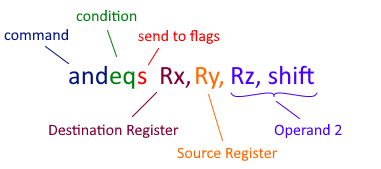

The ARM and Thumb Assembly Language
At the time of writing this, ARM is the second most widely used assembly language in the world, just after x86 (which is the assembly language your computer is probably using). ARM is used for mobile phones, and for several appliances and gaming consoles. It was developed by Acorn Computers in the UK in the 1980s, and stands for Acorn RISC Machines. Compared to Intel processors, ARM processors are smaller, require less power, and generate less heat, but are still very close in speed.
Modern ARM chips have a secondary mode called Thumb, in which it can execute the Thumb instruction set, which is a smaller version the full ARM instruction set. It contains all of ARM mode's most commonly used commands. It's slightly simpler, faster, and easier to read and learn. The vast majority of ARM code you come across will be written in Thumb mode. After learning Thumb, learning the full ARM instruction set will be just one tiny extra step.
The Physical Structure

The CPU has 16 normal registers: R0, R1, R2, R3, ... R15, and a status register: cpsr, aka the flags. Each register is 32 bits large, or 4 bytes. R13-R15 serve special purposes, and have alternate aliases. R13 is the stack pointer, or sp. R14 is the link register, or lr. R15 is the program counter, or pc. These will all be explained in detail later in this section.
The CPU has an ALU inside of it, which stands for Arithmetic Logic Unit. The ALU performs arithmetic and logical operations on its inputs, updating the flags as it does so.
The memory is an enormous array of bytes. Each byte has an address. The first byte is at address 0, the next byte is at address 1, the next byte is at address 2, etc. Devices that are plugged in to the computer are actually connected directly to regions of that memory space. The working RAM of the Gameboy Advance starts at address 0x02000000. The ROM starts at address 0x08000000. Other devices such as LCD controllers, Sound controllers, and Keypads have their own address spaces too.
The Thumb Instruction Set
Below is the complete list of Thumb instructions.
Key/Symbols
Rx, Ry, and Rz are registers. nn is a number (aka an immediate number). a = b is a programmer's way of writing: "The value of a becomes the value of b". Void = x means the result of x is dropped, but still updates the flags. x << y means "Bitshift x to the left y times, dropping any bits that leave the register." x >> y is the opposite.
| Logical Operations | |||
|---|---|---|---|
| Instruction | Effect | Flags | Description |
MOV Rx, nn | Rx = nn | NZ-- | Move register |
MOV Rx, Ry | Rx = Ry | NZ00 | Move register |
MVN Rx, Ry | Rx = NOT Ry | NZ-- | Move NOT register |
AND Rx, Ry | Rx = Rx AND Ry | NZ-- | Bitwise AND |
TST Rx, Ry | Void = Rx AND Ry | NZ-- | Test |
BIC Rx, Ry | Rx = Rx AND NOT Ry | NZ-- | Bit Clear |
ORR Rx, Ry | Rx = Rx OR Ry | NZ-- | Bitwise OR |
LSL Rx, Ry, nn | Rx = Ry << nn | NZc- | Logical Shift Left |
LSL Rx, Ry | Rx = Rx << Ry | NZc- | Logical Shift Left |
LSR Rx, Ry, nn | Rx = Ry >> nn | NZc- | Logical Shift Right |
LSR Rx, Ry | Rx = Rx >> Ry | NZc- | Logical Shift Right |
ASR Rx, nn | Rx = Rx >> nn * | NZc- | Arithmetic Shift Right |
ASR Rx, Ry | Rx = Rx >> Ry * | NZc- | Arithmetic Shift Right |
ROR Rx, Ry | Rx = Rx >> Ry ** | NZc- | Rotate Right |
NOP | R8 = R8 | ---- | No Operation |
| * | ASR: Preserves negative numbers, so that ASR x, 1 is equivalent to dividing x by 2 |
| ** | ROR: Bits that drop off the right are re-inserted on the left |
| Arithmetic Operations | |||
|---|---|---|---|
| Instruction | Effect | Flags | Description |
ADD Rx, Ry, nn | Rx = Ry + nn | NZCV | Add |
ADD Rx, nn | Rx = Rx + nn | NZCV | Add |
ADD Rx, Ry, Rz | Rx = Ry + Rz | NZCV | Add |
ADD Rx, pc, nn | Rx = (pc AND NOT 2) + nn | ---- | Get relative address |
ADD Rx, sp, nn | Rx = sp + nn | ---- | Get relative address |
ADD sp, nn | sp = sp + nn | ---- | Add offset to sp |
ADC Rx, Ry | Rx = Rx + Ry + Cy * | NZCV | Add with carry |
SUB Rx, Ry, nn | Rx = Ry - nn | NZCV | Subtract |
SUB Rx, nn | Rx = RX - nn | NZCV | Subtract |
SUB Rx, Ry, Rz | Rx = Ry - Rz | NZCV | Subtract |
SBC Rx, Ry, Rz | Rx = Ry - Rz - NOT Cy * | NZCV | Subtract with carry |
NEG Rx, Ry | Rx = 0 - Ry | NZCV | Negate |
CMP Rx, nn | Void = Rx - nn | NZCV | Compare |
CMP Rx, Ry | Void = Rx - Ry | NZCV | Compare |
CMN Rx, Ry | Void = Rx + Ry | NZCV | Compare NOT |
MUL Rx, Ry | Rx = Rx * Ry | NZCV | Multiply |
| * | Cy is the carry flag of cpsr |
| Branches and Calls | |||
|---|---|---|---|
| Instruction | Effect | Flags | Description |
B $addr | pc = addr + 2 | ---- | Branch to address * |
B{cond} $addr | if cond = True: pc = addr + 2 | ---- | Conditional Branch ** |
BL $addr | lr = pc + 1; pc = addr + 2 | ---- | Branch and Link *** |
BX Rx | pc = (Rx AND NOT 1) + 2; mode = Rx AND 1 | ---- | Branch and Exchange **** |
BLX Rx | lr = pc + 1; pc = (Rx AND NOT 1) + 2; mode = Rx AND 1 | ---- | Branch Link and Exchange |
SWI nn | lr = pc-1; ARM SVC mode; pc = 8 | ---- | Software Interrupt |
BKPT nn | ??? | ---- | Breakpoint |
| * | Branches (or jumps to a different address) work by modifying the program counter pc, which always points to the instruction after the next instruction to be executed. |
| ** | Conditional branches may have any of the conditional suffixes, described later in this section. They use the NZCV flags of cpsr to determine if the condition is true. |
| *** | Branch and link stores the pc before it branches. It's stored in the link register lr. |
| **** | Branch and Exchange switches to either ARM or THUMB mode based on the last bit of the address branched to. If the last bit is 0, it switches to ARM mode. If it's 1, it switches to THUMB mode. |
| Memory Load/Store | |||
|---|---|---|---|
| Instruction | Effect | Flags | Description |
LDR Rx, [Ry, nn] | Rx = u32[Ry + nn] | ---- | Load Word |
LDR Rx, [Ry, Rz] | Rx = u32[Ry + Rz] | ---- | Load Word |
LDRB Rx, [Ry, nn] | Rx = u8[Ry + nn] | ---- | Load Byte |
LDRB Rx, [Ry, Rz] | Rx = u8[Ry + Rz] | ---- | Load Byte |
LDRH Rx, [Ry, nn] | Rx = u16[Ry + nn] | ---- | Load Halfword |
LDRH Rx, [Ry, Rz] | Rx = u16[Ry + Rz] | ---- | Load Halfword |
LDSB Rx, [Ry, Rz] | Rx = s8[Ry + Rz] | ---- | Load Signed Byte |
LDSH Rx, [Ry, Rz] | Rx = s16[Ry + Rz] | ---- | Load Signed Halfword |
LDR Rx, [$addr] | Rx = u32[$addr] | ---- | Load PC-Relative |
LDR Rx, [sp, nn] | Rx = u32[sp + nn] | ---- | Load SP-Relative |
STR Rx, [Ry, nn] | [Ry + nn] = Rx | ---- | Store Word |
STR Rx, [Ry, Rz] | [Ry + Rz] = Rx | ---- | Store Word |
STRB Rx, [Ry, nn] | [Ry + nn] = byte(Rx) | ---- | Store Byte |
STRB Rx, [Ry, Rz] | [Ry + Rz] = byte(Rx) | ---- | Store Byte |
STRH Rx, [Ry, nn] | [Ry + nn] = halfword(Rx) | ---- | Store Halfword |
STRH Rx, [Ry, Rz] | [Ry + Rz] = halfword(Rx) | ---- | Store Halfword |
STR Rx, [sp, nn] | [sp + nn] = Rx | ---- | Store SP-Relative |
PUSH {Rlist} | [*sp] = Rlist | ---- | Push onto stack |
POP {Rlist} | Rlist = [*sp] | ---- | Pop off of stack |
STMIA Rx!, {Rlist} | [*Rx] = Rlist | ---- | Store multiple increment after |
LDMIA Rx!, {Rlist} | Rlist = [*Rx] | ---- | Load multiple increment after |
u8[x] and u16[x] represent Unsigned 8-bit and 16-bit values from address x (does not modify input) |
s8[x] and s16[x] represent Signed 8-bit and 16-bit values from address x (fills upper bits with 1 if negative) |
byte(Rx) means "the last 8 bits in Rx"; halfword(Rx) is the last 16 bits in Rx |
Rlist is a list of one or more registers to be affected. Ex: {r0, r1, r3-r7} |
Examples
Let's run through some example code while observing the CPU.
Initial State (when powered on)
r0: 00000000 r1: 00000000 r2: 00000000 r3: 00000000
r4: 00000000 r5: 00000000 r6: 00000000 r7: 00000000
r8: 00000000 r9: 00000000 r10: 00000000 r11: 00000000
r12: 00000000 r13: 03007F00 r14: 00000000 r15: 08000002
//r15 automatically increments by 2 after each instruction
> mov r0, 0x12 //store 0x12 in r0
r0: 00000012 r1: 00000000 r2: 00000000 r3: 00000000
r4: 00000000 r5: 00000000 r6: 00000000 r7: 00000000
r8: 00000000 r9: 00000000 r10: 00000000 r11: 00000000
r12: 00000000 r13: 03007F00 r14: 00000000 r15: 08000004
> lsl r0, r0, 8 //shift the bits in r0 left by 8 bits (2 hex-digits)
//r0 = r0 << 8
r0: 00001200 r1: 00000000 r2: 00000000 r3: 00000000
r4: 00000000 r5: 00000000 r6: 00000000 r7: 00000000
r8: 00000000 r9: 00000000 r10: 00000000 r11: 00000000
r12: 00000000 r13: 03007F00 r14: 00000000 r15: 08000006
> mov r1, 0x34
r0: 00001200 r1: 00000034 r2: 00000000 r3: 00000000
r4: 00000000 r5: 00000000 r6: 00000000 r7: 00000000
r8: 00000000 r9: 00000000 r10: 00000000 r11: 00000000
r12: 00000000 r13: 03007F00 r14: 00000000 r15: 08000008
> add r2, r0, r1 //add r0 and r1, and store the result in r2
//r2 = r0 + r1
r0: 00001200 r1: 00000034 r2: 00001234 r3: 00000000
r4: 00000000 r5: 00000000 r6: 00000000 r7: 00000000
r8: 00000000 r9: 00000000 r10: 00000000 r11: 00000000
r12: 00000000 r13: 03007F00 r14: 00000000 r15: 0800000A
> str r2, [sp, 0x4] //store r2 at address [sp + 4]
//sp is another word for "r13"
//this instruction does not modify any registers
r0: 00001200 r1: 00000034 r2: 00001234 r3: 00000000
r4: 00000000 r5: 00000000 r6: 00000000 r7: 00000000
r8: 00000000 r9: 00000000 r10: 00000000 r11: 00000000
r12: 00000000 r13: 03007F00 r14: 00000000 r15: 0800000C
If we open a memory viewer and went to address 03007F00, we'd see:
If we opened a disassembler and went to address 08000000 (the start of the ROM), we'd see:
Every instruction corresponds to some hex number, aka its machine code. Computer chips are just logic circuits that can read those numbers, and execute the corresponding instructions. The process of converting human-written code into machine code is called compiling. The next lesson will demonstrate how to compile by hand.
All programs must be compiled to machine code before the CPU can run them. Programming languages, such as ARM, C, Python, and Java are essentially just interfaces for machine code. Disassemblers are programs that read machine code, and translate it into assembly code. Any program can be disassembled, and if you can read assembly, then you can figure out what's going on.
Special Registers
Certain registers are reserved for special purposes. Some instructions specifically target those registers, or treat them differently.
| Register | Name | Alias | Description |
|---|---|---|---|
r13 | Stack Pointer | sp | Contains the address of the next free space on the stack |
r14 | Link Register | lr | Used to store the current address, so that you can return |
r15 | Program Counter | pc | Determines which instruction to grab next |
cpsr | Program Status Register | Contains information about the previous operation | |
The Stack Pointer
The stack is a section of memory dedicated to storing variables. It's like a bank of unlimited extra registers, in case the 13 registers you normally work with aren't enough. The value of a register, or a group of registers, may be placed onto the stack with a single push {rlist} instruction, where rlist specifies which registers to store. Those values may be taken off of the stack, and stored in registers using a pop {rlist} instruction, where rlist specifies which registers to fill.
The stack pointer (sp) contains an address that starts at the bottom of the stack. As the stack grows and shrinks with push and pop instructions, sp keeps track of the address of the next available space.

The bottom of the stack is the highest address of the stack (03007F00 for users on the gameboy advance). As the stack grows, it approaches lower addresses. If it grows too large, it can interfere with important parts of memory. This is called a stack overflow. When data is popped off of the stack, it doesn't actually get deleted, all that happens is the stack pointer moves back down. That leftover data can be overwritten if more items are pushed onto the stack.
Push instructions of multiple registers store the registers in order, with the highest register at the highest address. Subsequent pushes store registers on top of that.
Initial State
r0: FFFFFFFF r1: 12345678 r2: DEADBEEF r3: 01010101
r4: BABEFACE r5: 00000000 r6: 00000000 r7: 00000000
r8: 00000000 r9: 00000000 r10: 00000000 r11: 00000000
r12: 00000000 r13: 03007F00 r14: 00000000 r15: 08000002
> push {r0-r3} //stores r0, r1, r2, and r3 on the stack
r0: FFFFFFFF r1: 12345678 r2: DEADBEEF r3: 01010101
r4: BABEFACE r5: 00000000 r6: 00000000 r7: 00000000
r8: 00000000 r9: 00000000 r10: 00000000 r11: 00000000
r12: 00000000 r13: 03007EF0 r14: 00000000 r15: 08000004
Notice that r13 decreased by 0x10 (16). It decreased by 4 for each register, because each register is 4 bytes.
If we open a memory viewer and went to address 03007EE0, we'd see:
Memory View
03007EE0: 00000000 00000000 00000000 00000000
03007EF0: FFFFFFFF 12345678 DEADBEEF 01010101
03007F00: 00000000 00000000 00000000 00000000
03007F10: 00000000 00000000 00000000 00000000
Now let's push r4 onto the stack.
push {r4}
r0: FFFFFFFF r1: 12345678 r2: DEADBEEF r3: 01010101
r4: BABEFACE r5: 00000000 r6: 00000000 r7: 00000000
r8: 00000000 r9: 00000000 r10: 00000000 r11: 00000000
r12: 00000000 r13: 03007EEC r14: 00000000 r15: 08000006
Memory View
03007EE0: 00000000 00000000 00000000 BABEFACE
03007EF0: FFFFFFFF 12345678 DEADBEEF 01010101
03007F00: 00000000 00000000 00000000 00000000
03007F10: 00000000 00000000 00000000 00000000
If r0-r4 was replaced with random data, we could restore their values by popping off of the stack.
r0-r4 replaced with random data
r0: 6D206557 r1: 20747375 r2: 65766168 r3: 66617720
r4: 73656C66 r5: 00000000 r6: 00000000 r7: 00000000
r8: 00000000 r9: 00000000 r10: 00000000 r11: 00000000
r12: 00000000 r13: 03007EEC r14: 00000000 r15: 08000006
> pop {r4} //grabs value at sp, stores it in r4, and increases sp by 4
r0: 6D206557 r1: 20747375 r2: 65766168 r3: 66617720
r4: BABEFACE r5: 00000000 r6: 00000000 r7: 00000000
r8: 00000000 r9: 00000000 r10: 00000000 r11: 00000000
r12: 00000000 r13: 03007EF0 r14: 00000000 r15: 08000008
> pop {r0-r3} //grabs next 4 values at sp, stores them in r0-r3, and increases sp accordingly
r0: FFFFFFFF r1: 12345678 r2: DEADBEEF r3: 01010101
r4: BABEFACE r5: 00000000 r6: 00000000 r7: 00000000
r8: 00000000 r9: 00000000 r10: 00000000 r11: 00000000
r12: 00000000 r13: 03007F00 r14: 00000000 r15: 0800000A
Note that since the stack is a First-In-Last-Out system, restoring values should be done in the opposite order that they were stored.
The Link Register
In programming, a function is a group of instructions. Functions may be "called", causing those instructions to be executed. It's a bit like a macro. Additionally, they may have inputs and outputs. In assembly, functions are groups of instructions stored at some location in memory. The typical way to call a function is to use a bl $addr instruction, where $addr is the address of the function. After jumping to a function address, the program executes the instructions there, and when it's finished, it returns to the spot from which it called the function.
If you were to jump to this function using a regular branch instruction (b $addr), it would execute normally, except at the very end. It wouldn't know how to return, because in order to return, it needs to know what address to return to, which did not get stored anywhere when you branched. Branch and link instructions (bl $addr) take care to store the address of the next instruction before branching. The address is stored in the link register (lr).
At the end of a function, you'll often see bx lr, which branches to whatever address is stored in lr.
...
08018200: 2007 mov r0, 0x7
08018202: F8FDF000 bl $08018400 //This calls the function at $08018400
08018206: 1809 add r1, r1, r0
...
This function returns the 4-byte value at address $03000000 + 4*r0
08018400: 0080 lsl r0, r0, 0x2 //multiply r0 by 4
08018402: 21C0 mov r1, 0xc0 //move 0xc0 into r1
08018404: 0489 lsl r1, r1, 0x12 //multiply r1 by 2^18
08018406: 5840 ldr r0, [r0, r1] //load word at [r0 + r1] into r0
08018408: 4770 bx lr //return to caller
Technically, the value stored in lr at a bl instruction in Thumb mode is pc+1. Storing an odd number in lr lets the function know that when it returns, it should enter Thumb mode. In Arm mode, the value stored in lr is pc.
This branch and link system works great until you try to call a function within a function. As soon as a new bl instruction is executed, the old value of lr is overwritten. For this reason, functions that call other functions usually push the link register onto the stack before doing anything else. The function eventually returns by popping that value to the pc.
This function calls $08018400 3 times, returning the sum of the return values
(the return of this function is the value of r0 at the end of the function)
08018000: B520 push {r5, lr} //stores r5 and lr on the stack for safekeeping
08018002: 1C05 add r5, r0, 0x0
08018004: F9FCF000 bl $08018400
08018008: 1809 add r1, r1, r0
0801800A: 1C68 add r0, r5, 0x1
0801800C: F9F8F000 bl $08018400
08018010: 1809 add r1, r1, r0
08018012: 1CA8 add r0, r5, 0x2
08018014: F9F4F000 bl $08018400
08018018: 1808 add r0, r1, r0
0801801A: BD20 pop {r5, pc} //restores r5, and puts the old value of lr in pc
While functions don't necessarily need inputs and outputs to do things, it's often helpful to think of them as black boxes that accept inputs, and produce outputs.

Inputs and outputs of functions are typically stored in r0-r3. Functions are sometimes called in different ways too, like by moving a register directly into lr before branching, or by copying pc to a register before branching.
The Program Counter
The program counter (pc) is continuously fed into the ROM to determine which instruction to receive next. Each time the CPU executes an instruction, it also increments the pc. To jump to a different address in the ROM, it modifies the pc to reflect the desired address. This is done using b, bl, bx, or blx instructions. It may also use conditional branch instructions, such as beq, or bne, which look at the Current Program Status Register to determine whether or not to branch at all.
In the early days of ARM, a decision was made to have the pc point two instructions ahead of the instruction it's currently executing, which at the time helped simplify the hardware design. Instructions were executed in three phases: Fetch, Decode, and Execute. It could fetch the next instruction while the CPU was busy decoding and executing the instructions that were fetched earlier. The pc pointed at the next instruction to fetch. For you and me, it only serves to cause headaches with off-by-one errors.
r0: 00000000 r1: 00000000 r2: 00000000 r3: 00000000
r4: 00000000 r5: 00000000 r6: 00000000 r7: 00000000
r8: 00000000 r9: 00000000 r10: 00000000 r11: 00000000
r12: 00000000 r13: 03007F00 r14: 00000000 r15: 08000002
> b $08000400
r0: 00000000 r1: 00000000 r2: 00000000 r3: 00000000
r4: 00000000 r5: 00000000 r6: 00000000 r7: 00000000
r8: 00000000 r9: 00000000 r10: 00000000 r11: 00000000
r12: 00000000 r13: 03007F00 r14: 00000000 r15: 08000402
When executing in Thumb mode, the pc increments by 2 each instruction (because each instruction is 2 bytes long). When executing in Arm mode, it increments by 4 each instruction (each instruction is 4 bytes long).
A few instructions are PC-Relative, meaning that their result depends on the value of the program counter at the moment they're executed. Instructions that branch (besides bx) actually work by adding to or subtracting from the current value of the program counter.
b $addr is a branch command, which jumps to $addr. bl $addr is branch and link command, which links the pc in addition to branching. bx rn is branch and exchange, which branches to the address contained in rn, and can switch (exchange) between Thumb and Arm mode, based on whether rn was odd or even. blx is branch, link, and exchange, which links pc, in addition to performing a bx command.
Another important PC-Relative instruction is ldr rn, [$addr], which grabs 4 bytes from addr, which is at some offset to the pc, and stores it in rn. The data it grabs is often located right after the end of the function, immediately after the return instruction. Data and Instructions are intermingled with each other in a ROM. Sometimes, just telling the difference between them can be quite tricky.
This code snippet checks the value at address $08020004, stores it in r4, then branches there with 'bx r4'.
08020000: 4C00 ldr r4, [$08020004] (=$12345678) //the number in parentheses is the value at address $08020004
08020002: 4720 bx r4
08020004: 5678 strh r0, [r0, 0x0]
08020006: 1234 lsr r1, r0, 0x0
Underneath bx r4, you can see 5678 and 1234 on the left, next to the addresses. When reading from 08020004, those values combine to form $12345678. The reason for the swapping of positions is explained in the "Endianness" section.
The Current Program Status Register
Executing instructions conditionally is a two-step process in Thumb and Arm:
- Compare two values
- Branch based on the comparison
Typically, a cmp op1, op2 instruction is used, which compares op1 with op2, and uses the result to modify the Current Program Status Register (cpsr). After that, a conditional branch instruction can be used, which automatically reads cpsr to determine whether or not to branch.
cmp r0, 0x5 //compares r0 to the number 5; modifies cpsr
beq $08001234 //branches if r0 was equal to 5 (beq means branch if equal)
b $08001300 //otherwise it branches to $08001300
There are 14 conditional suffixes. Each of these can be tacked onto the end of a b instruction:
| Suffix | Meaning | Flags Required | Suffix Stands For |
|---|---|---|---|
EQ | Equal | Z=1 | Equal |
NE | Not Equal | Z=0 | Not Equal |
CS | Unsigned Greater than or Equal to | C=1 | Carry Set |
CC | Unsigned Less than | C=0 | Carry Cleared |
MI | Negative | N=1 | Minus |
PL | Positive or Zero | N=0 | Plus |
VS | Overflow | V=1 | Overflow Set |
VC | No Overflow | V=0 | Overflow Cleared |
HI | Unsigned Greater than | C=1 and Z=0 | Higher |
LS | Unsigned Less than or Equal to | C=0 or Z=1 | Lower or Same |
GE | Signed Greater than or Equal to | N=V | Greater than or Equal to |
LT | Signed Less than | N!=V | Less than |
GT | Signed Greater than | Z=0 and N=V | Greater than |
LE | Signed Less than or Equal to | Z=1 or N!=V | Less than or Equal to |
cpsr is a 32-bit register, but all that really matters is the upper 4 bits. (The other bits are either unused or not modifiable or accessible to the user.) Those 4 bits are called the flags. Each flag has a name, and a unique behavior. They are the N, Z, C, and V flags.
Comparison instructions actually work by performing an arithmetic operation, without storing the result. Every arithmetic operation automatically updates the flags. cmp op1, op2 subtracts op2 from op1. If the result of the operation was negative (in other words, if the uppermost bit, bit 31, is set), then the N flag, or Negative Flag, is set. If the result was zero, then the Z flag, or Zero Flag, is set. If the operation caused the ALU to try to carry a 1 beyond bit 31, the C flag, or Carry Flag, is set. If the result is negative after adding two positives, or positive after adding two negatives, then the V flag, or Overflow Flag, is set. (Note: subtraction is implemented exactly as addition, except the subtracted value is first converted to its opposite.)
Somewhat surprisingly, with just those four flags, you can determine exactly which of those conditions in the conditional suffix list were true. There are three other comparison instructions: cmn adds its operands, instead of subtracting. tst performs bitwise AND on its operands, and only updates N and Z. teq (Arm only) performs bitwise XOR on its operands, and also only updates N and Z.
Signed vs Unsigned
At the end of the Intro to Binary, I briefly introduced negative numbers. To recap: When a 32-bit register reaches 2^32, (in binary that's a 1 followed by 32 zeroes), it resets to 0. Also, any negative number added to its positive counterpart equals 0. In assembly, negative numbers still follow that property. 0xFFFFFFFF is considered to be -1, because when you add it to 1, the result is 0. To find the negative of a number, flip every bit, then add 1.
A signed number in binary is a number that may be positive or negative. Positive numbers can reach as high as 0x7FFFFFFF. 0x80000000 is a negative number (a 1 followed by 31 zeroes in binary). The way to tell if a number is positive or negative is to look at bit 31.
Some special care needs to be taken when performing arithmetic on negative numbers. For example, if you tried to divide a negative number by 2 with a simple lsr instruction, that would clear bit 31, which would make the number positive. To actually divide by 2, you can use an asr instruction (arithmetic shift right), which shifts all of the bits right, but also fills the vacated upper bits with 1 if the original number was negative.
When loading a byte (8 bits) or halfword (16 bits) from memory, sometimes that data is supposed to represent a negative number. If you loaded those bits directly into an empty register, suddenly that number would appear to be positive, because bit 31 is clear. To handle that scenario, there are instructions to load signed bytes and halfwords: ldsb and ldsh. These instructions fill the upper bits of the destination register with 1 after loading the data, if its uppermost bit was 1.

Unsigned instructions don't do anything special to the values they work with. They treat everything like a positive number. The largest unsigned value is 0xFFFFFFFF.
Endianness
All data sent to memory is stored in byte-sized chunks. Each byte has its own address. When storing a 32-bit number (4 bytes), the number is first split up into 4 pieces, then those pieces are shipped off to the correct addresses. When loading a 32-bit number, those 4 memory addresses send out their info, which gets reassembled into a 32-bit number.
After splitting up a number into bytes, you might be inclined to store the uppermost bytes at the highest addresses, and the lowest bytes at the lowest addresses. However, when we view the memory, addresses are read from left-to-right, top-to-bottom. This is the opposite order that we're used to reading numbers, with the most significant digit on the left, and the least significant digit on the right. For this reason, many systems store the most significant byte at the lowest address. This is the Big Endian order (numbers are read starting from the big end).
Little Endian is the reverse: numbers are read starting from the little end. The least significant byte gets sent to the lowest address. This ordering is a bit simpler to implement in hardware, however it can make it confusing to read data in a memory viewer.
Different systems and machines use different Endianness. Network protocols typically use Big Endian, while most computer processors use Little Endian. Most ARM implementations use Little Endian. Memory viewers will usually swap the bytes around for you when switching between viewing individual bytes vs viewing 16-bit and 32-bit values.

The Arm Language
The Arm instruction set is essentially just compound Thumb instructions plus suffixes. Here's an example:
The instruction above performs an and operation between the source register and operand 2, then stores the result in the destination register. However, it will only do that if the condition (eq) is satisfied in cpsr. The s for sending to flags is optional. If s is present, then the result of the operation will update cpsr.
Operand 2 consists of a register and a shift. The shift may be any of the shift instructions: lsl, lsr, asr, ror. The shift is applied to the register, and the result is the value of operand 2. Operand 2 may alternatively be an immediate number (where Rz and shift are replaced with nn). This operand is often referred to as a "flexible second operand".
Several parts of this instruction are optional. Instructions may be unconditional, in which case the condition field is omitted. The send to flags field may be omitted. If the source register is omitted, then operand 2 is added directly to the destination register.
The command field can be any of the Logical or Arithmetic Thumb commands, such as add, sub, neg, and cmp. Many of these commands require some fields to be omitted.
Branching commands (b, bl, bx, blx) have the same format and meaning as they do in Thumb. Load/Store is basically the same, although it also lets you use the conditional field, and a flexible operand for the offsets of addresses. Most commands have larger accepted ranges of inputs in Arm mode.
The Arm instruction set also includes a handful of new instructions:
RSB{cond}{s} Rx, Ry, Op2 | Reverse Subtract: subtracts Ry from Op2 |
RSC{cond}{s} Rx, Ry, Op2 | Reverse Subtract w/ Carry |
RRX{cond}{s} Rx, Ry | Rotate Right w/ Extend: Like ROR Rx, Ry, 0x1 |
| but includes the Carry Flag in the rotation | |
TEQ{cond} Rx, Op2 | Test Exclusive Or: Like TST but uses bitwise XOR |
UMULL{cond}{s} RdLo, RdHi, Rx, Ry | Unsigned Multiply Long: Multiplies Rx and Ry, |
and stores the lower 32 bits in RdLo, and the | |
upper 32 bits in RdHi | |
SMULL{cond}{s} RdLo, RdHi, Rx, Ry | Signed Multiply Long: The signed version of UMULL |
LDRD{cond} Rx, $addr | Load DoubleWord: Loads a 64-bit integer from |
$addr, and stores the lower half in Rx, and | |
the upper half in R(x+1) | |
STRD{cond} Rx, $addr | Store DoubleWord: The inverse of LDRD |
STM{cond}{amod} Rx{!}, Rlist | Store Multiple: Store the registers in Rlist at |
address Rx. amod is an addressing mode* | |
! is an optional writeback** | |
LDM{cond}{amod} Rx{!}, Rlist | Load Multiple: The inverse of STM |
MRS | Move Register to System Coprocessor Register: |
Allows you to store a register in cpsr | |
MRS | Move System Coprocessor Register to Register: |
Allows you to store cpsr in a register |
| * | There are four types of addressing modes: |
- IB Increment Before: Increments the target address before storing a register there | |
- IA Increment After: Increments the target address after storing a register there | |
- IB Decrement Before: Decrements the target address before storing a register there | |
- IA Decrement After: Decrements the target address after storing a register there | |
| ** | If writeback is specified, then the register containing the address will be updated with the final position of the target address |
| *** | Note that stmdb sp! is identical to push, and ldmia sp! is identical to pop |
| **** | This table is not a comprehensive list of ARM instructions. It only contains what you're most likely to see. Click for more information about Thumb and ARM instruction sets |
A Powerful Language
Congratulations! You've learned how to read assembly! If you've read this far, you should be able to read the vast majority of Arm and Thumb instructions. The applications of this extend well beyond debugging ARM reliant programs. Most assembly languages have a strikingly similar program architecture. When it's absolutely critical to have high-performance code, it is usually written in C or Assembly. Higher level programming languages can never quite reach the same level of efficiency. Programming languages of the future will be written in Assembly.
- Winston Churchill